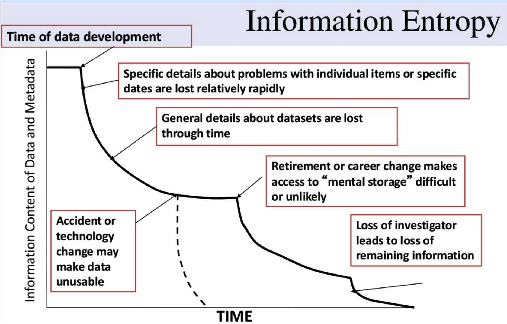
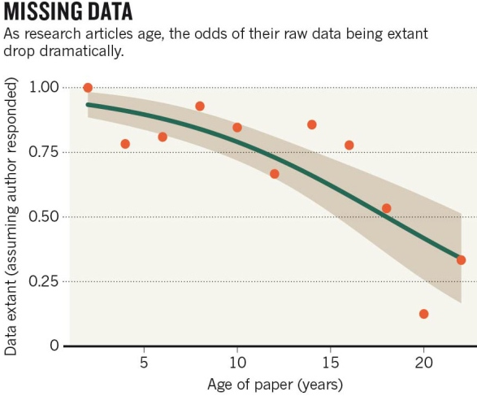
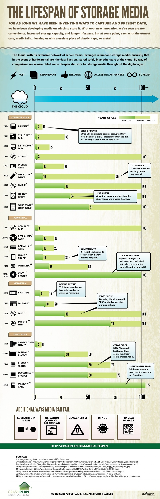

Research Data Management
What constitutes research data?
"Material or information on which an argument, theory, test or hypothesis, or another research output is based."
"What constitutes such data will be determined by the community of interest through the process of peer review and program management."
"Units of information created in the course of research"
"Research data is defined as the recorded factual material commonly accepted in the scientific community as necessary to validate research findings."
Marieke Guy. "Bridging the Gap Between Researchers and Research Data Management"
NSF Data Management Plan FAQs
OMB-110, Subpart C, section 36, (d) (i)
Material or information necessary to come to your conclusion
Types of research data
- By origin
- Observational
- Experimental
- Simulation
- Derived/Compiled
- Reference
- By form
- Textual
- Numeric/Tabular
- Geospatial
- Audio/Video
- Images
- Code/Software
Data takes many forms
Lab notebooks, field notebooks
Spreadsheets, CSV files
Databases
Statistical files (R, Python, SPSS)
Geographic Information Systems (GIS)
Digital images and scans
Interview recordings and transcripts
Genomic and protein sequences
Sensor and IoT data
Computational models and simulations
Computer code and scripts
Digital collections and web archives
The data lifecycle
Stages of research data
- Planning
- Collection
- Processing and cleaning
- Analysis
- Sharing and publication
- Preservation and reuse
Data management is relevant at every stage.
Data degrades over time

Michener et al. (1997) doi:10.1890/1051-0761(1997)007[0330:NMFTES]2.0.CO;2Why manage and share data?
The case for sharing
- Reproducibility and verification
- Accelerates new discovery
- Enables meta-analysis and data mining
- Citation credit to data creators
- Required by funders and journals
Data disappears

Vines et al. (2014) Current Biology. doi:10.1016/j.cub.2013.11.014Funder mandates
- NIH (January 2023)
- Data Management & Sharing Policy: DMS plan required for all proposals generating scientific data
- NSF (May 2024)
- PAPPG 24-1: data supporting publications must be shared at time of publication
- OSTP (August 2022)
- Nelson Memo: all federal agencies updating public access policies
- DOE, USDA, NEH...
- Agency-specific mandates continue to expand
The FAIR principles
The standard framework for research data management.
FAIR
- Findable
- Persistent identifiers (DOIs), rich metadata, indexed in searchable resources
- Accessible
- Retrievable by identifier via open protocols; metadata always accessible
- Interoperable
- Uses shared vocabularies, standards, and formats; machine-readable
- Reusable
- Clear licensing, provenance, and documentation; meets community standards
FAIR in practice
- FAIR does not mean open — restricted data can still be FAIR
- FAIR applies to data and metadata
- FAIR is a spectrum, not a binary
- Funders and journals increasingly reference FAIR explicitly
Data management plans
What goes in a DMP?
- Data types and formats expected
- Standards and metadata
- Data storage and backup during the project
- Access policies and sharing timeline
- Privacy, security, and ethical considerations
- Long-term preservation and repository selection
Typically 2 pages. Written at proposal stage, updated during the project.
NIH vs. NSF
- NIH DMS Plan
- Applies to all scientific data
- Must name a repository
- Budget for data management allowed
- Reviewed by program staff
- NSF DMSP
- 2-page supplementary document
- Discipline-specific expectations
- Data shared at publication
- Reviewed by peers
DMP tools
- DMPTool (dmptool.org)
- Templates aligned to funder requirements
- DMPOnline (dmponline.dcc.ac.uk)
- UK/international equivalent
- Your library
- Institutional guidance and review
- Funder templates
- NIH, NSF, NEH each provide specific guidance
Best practices
File naming
 Jorge Cham, PHD Comics
Jorge Cham, PHD Comics
File naming conventions
- Use consistent, descriptive names
- Include dates in YYYY-MM-DD format
- Avoid spaces and special characters
- Include version numbers (v01, v02) or use version control
- Agree on conventions within your project team
Example: survey_responses_2025-01-15_v02_cleaned.csv
Tidy data structure
- Each variable in its own column
- Each observation in its own row
- Each type of observational unit in its own table
- Human-readable column headers
- Related tables linked by key/ID columns
Documentation
Every dataset needs a README and a data dictionary.
- README
- Project context, file descriptions, collection methods, access conditions
- Data dictionary
- Variable names, definitions, units, allowed values, codes for missing data
- Metadata standards
- Dublin Core, DDI, Darwin Core, or discipline-specific schemas
Version control
- Git/GitHub: track changes, collaborate, maintain history
- For code and data (small datasets, scripts, notebooks)
- DVC (Data Version Control): Git-like tracking for large data files
- At minimum: consistent file naming with version numbers
- Never overwrite raw data — keep originals untouched
Sharing and preserving data
Where to deposit data
- Domain-specific repositories
- ICPSR (social science), GenBank (genomics), PANGAEA (earth science)
- Generalist repositories
- Zenodo, Dryad, Figshare, Dataverse, OSF
- Institutional repositories
- Check with your library
Data citation
- Datasets get DOIs via DataCite
- Citation format: Creator (Year). Title. Repository. DOI
- Data citations appear in reference lists alongside papers
- Proper citation gives credit to data creators
- ORCID links researchers to their datasets
Sharing data is not losing control — it is gaining credit.
Preservation formats
- Prefer
- Open, non-proprietary formats
- CSV over Excel
- TIFF/PNG over PSD
- Plain text, PDF/A, XML, JSON
- Uncompressed or lossless
- Avoid
- Proprietary binary formats
- Software-dependent formats
- Formats without open specs
- Lossy compression
- Encryption without documented keys
Storage media have lifespans

CrashPlan / Code 42 SoftwareKey takeaways
- Plan early — write your DMP at the proposal stage
- Document everything — future you is your first user
- Use open formats and standards
- Apply FAIR principles as a guiding framework
- Deposit in a repository and get a DOI
- Your library can help
Resources
- DMPTool: dmptool.org
- re3data.org: Registry of Research Data Repositories
- FAIR Principles: go-fair.org
- DataCite: datacite.org
- Library of Congress Recommended Formats: loc.gov/preservation/resources/rfs/